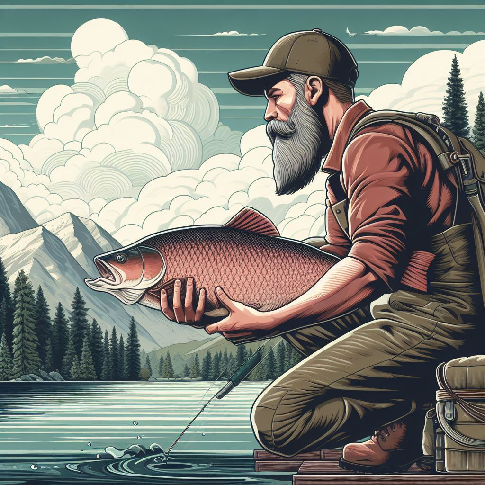

Caiçaras e a Natureza
Sua ligação profunda com a natureza, especialmente o mar, é o traço distintivo mais marcante em relação à cultura caipira.
Veja abaixo como os Caiçaras surgiram e as suas características.
Caiçara é o nome dado à um dos diversos povos tradicionais brasileiros e como os vários outros apresenta sua própria forma de cultura e expressão. Ser caiçara vai além de uma definição técnica, é um estado de espírito que carrega consigo uma identidade geográfica. Eles são as pessoas que nasceram ou vivem nas regiões litorâneas, principalmente no Sul e Sudeste do estado de São Paulo. Eles preservam muito a natureza e lutam para não "desaparecerem" como tatas outras culturas que foram sumindo conforme o desenvolvimento do Brasil.
A interação entre indígenas, africanos trazidos como escravos e
colonizadores europeus criou uma fusão única de culturas que se
refletiu nos costumes, tradições e modos de vida dos caiçaras. Essa
rica miscigenação cultural é uma característica fundamental da identidade caiçara.
Os primeiros caiçaras eram, em sua maioria, descendentes de
povos indígenas locais, como os tupinambás e guaranis, que habitavam as áreas
costeiras. Essa é a principal influência da cultura caiçara que pode ser vista
em quase tudo, um exemplo é o próprio nome caiçara que vem do tupi-guarani que
faz referência às cercas que protegiam aldeias na época do descobrimento que
significa e também a principal atividade econômica deles a PESCA.
À medida que os colonizadores europeus estabeleceram suas
colônias, as comunidades indígenas foram gradualmente influenciadas e
assimiladas pelas culturas europeias. Assim os caiçaras como a grande maioria de
nós também foi influenciada pelos europeus, o principal traço dessa cultura na
vida deles é a religião (catolicismo) e as celebrações aos santos.
Esses povos foram trazidos para o Brasil como escravos a partir do século 16 no
período colonial, porém eles também influenciaram na criação da cultura
caiçara. Uma das influências desse povo na cultura caiçara pode ser visto nas
roupas coloridas que são utilizadas em festividades
Sua ligação profunda com a natureza, especialmente o mar, é o traço distintivo mais marcante em relação à cultura caipira.
Os caiçaras possuem uma rica tradição oral, transmitindo histórias, lendas e cantigas para as gerações mais jovens em rodas de histórias realizadas no centro de cada povoado.
Enquanto os ribeirinhos tendem a se concentrar principalmente na pesca de peixes em geral, os caiçaras adotam uma abordagem mais diversificada em suas atividades de pesca (pescando vários tipos).
A cultura caiçara é enriquecida pela sua profunda conexão com o ambiente marinho, moldando suas tradições, culinária e modo de vida de maneira única.
As histórias e lendas compartilhadas nas rodas de histórias caiçaras frequentemente refletem a relação do povo com o mar e seus mitos associados.
No dia 15 de março em São Sebastião Acontecem eventos reúnem moradores e visitantes em torno de danças típicas, comidas tradicionais, música ao vivo e manifestações culturais únicas da região.
A consolidação dos caiçaras como uma comunidade cultural distinta no litoral brasileiro ocorreu ao longo de muitos séculos e foi moldada por uma série de fatores históricos, sociais e ambientais. Alguns fatores foram: